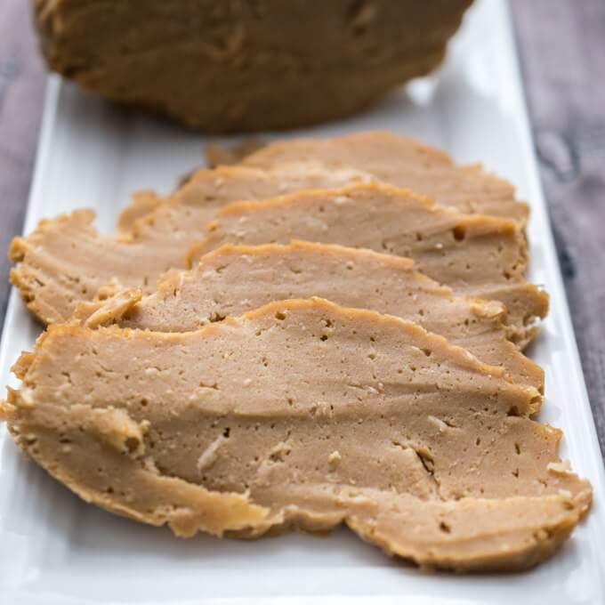

Seitan

Description
This chewy seitan makes a great meat substitute, and it has as much protein as steak!
Credit: connoisseurusveg.com
Ingredients
For the Dough
- 1 cup vital wheat gluten
- 1/4 cup chickpea flour
- 1 cup water
For the Broth - Pork Flavor
- 6 cups low sodium vegetable broth or water
- 1/3 cup soy sauce
- 2 tablespoons maple syrup
- 2 tablespoons apple cider vinegar
- 2 teaspoons liquid smoke
- 2 teaspoons smoked paprika
- 1 teaspoon onion powder
- 1 teaspoon garlic powder
For the Broth - Chicken Flavor
- 6 cups low sodium vegetable broth
- 1/3 cup soy sauce
- 1/4 cup nutritional yeast flakes
- 1 1/2 teaspoons white wine vinegar
- 1 1/2 teaspoons poultry seasoning
- 1 teaspoon onion powder
- 1/2 teaspoon garlic powder
- 1/2 teaspoon liquid smoke
For the Broth - Beef Flavor
- 5 1/2 cups low sodium vegetable broth
- 1/2 cup dry red wine
- 1/3 cup soy sauce
- 2 tablespoons vegan Worcestershire sauce
- 1 teaspoon dried thyme
- 1/2 teaspoon onion powder
- 1/2 teaspoon garlic powder
- 1/2 teaspoon black pepper
Steps
- Stir the vital wheat gluten and chickpea flour together in a medium bowl.
- Add the water and stir to form a soft dough.
- Transfer the dough to a work surface and knead it for 5 minutes.
- Allow the dough to rest for 5 minutes.
- While the dough rests, stir all of the broth ingredients for your choice of broth together in a large pot.
- Place the pot over high heat and bring the mixture to a boil. Lower the heat to a low simmer.
- Cut the dough into at least 4 large pieces, or if you prefer, smaller strips or chunks.
- Add the dough to the broth.
- Allow the broth to simmer for 1 hour, uncovered, watching closely to ensure it stays at a low simmer (don't allow it to rapidly boil).
- Remove the pot from heat and allow it to cool a bit.
- When the seitan is cool enough to handle, you can cut it into smaller pieces if you like. Use it in a recipe immediately, or store it in the broth. Refrigerate for up to 5 days, or freeze.